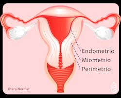
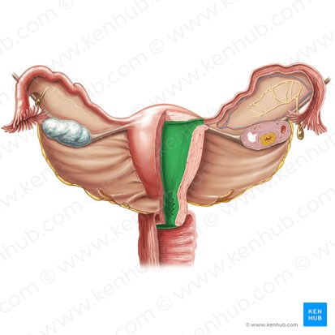
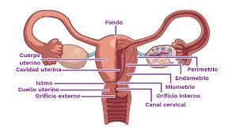

1. ¿Qué ligamento sostiene el útero en su posición en la pelvis?

Contesta correctamente todas las preguntas para avanzar.
1. ¿Qué ligamento sostiene el útero en su posición en la pelvis?
2. ¿Qué parte del útero es más susceptible a cambios cíclicos?
3. ¿Qué capa uterina se desprende durante la menstruación?
4. ¿Cómo se denomina la unión entre el cuerpo del útero y el cuello?

5. ¿Cuál es la porción superior del útero?
